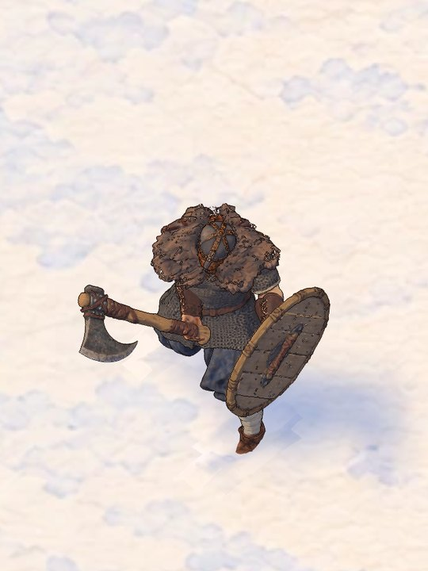
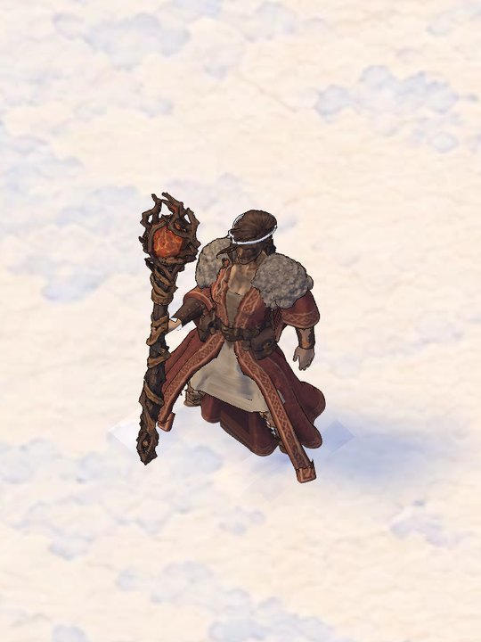
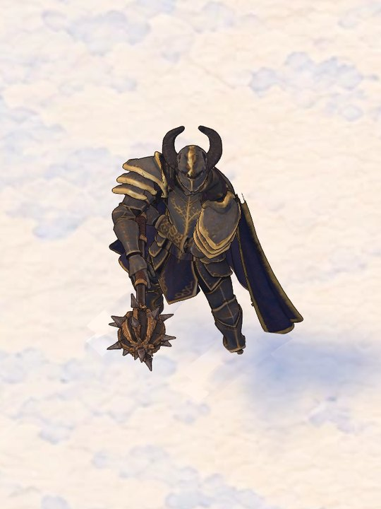

Dark Knight
Mace. Space attack · X war cry · G his gear
His painted kit at 1.96 m — mace, helm, pauldrons, chest and cape. Take the mace off with GEAR and he walks unarmed (attack and war cry need the mace). No war-cry effect yet.
Play the dark knight